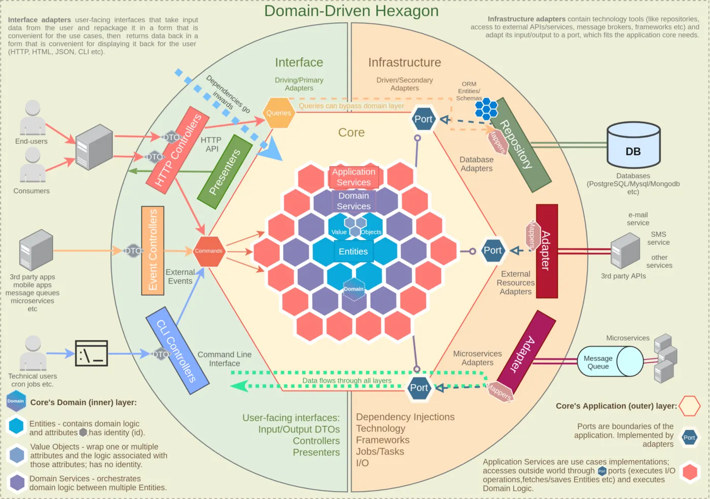

Hexagonal Architecture & DDD
What problem this solves
This is a set of recommendations, not rigid rules, for structuring applications with real business complexity. It blends Domain-Driven Design, Hexagonal (Ports & Adapters) Architecture, Clean/Onion Architecture, and Secure by Design ideas. Every project is different: adopt what helps, skip what over-complicates.
Pros / Cons
✅ Pros
- Independent of frameworks, DBs, and external tech, so you can swap them out cheaply
- Easy to test and to scale
- More secure: some rules are baked directly into the design
- Multiple teams can work on it without constant conflicts
- New features stay roughly equally easy to add as the system grows
- Well-separated pieces can be peeled off into microservices later
⚠️ Cons
- Sophisticated: needs solid grounding in SOLID, Clean Architecture, DDD; usually needs an experienced lead
- Overkill for small/medium apps with little business logic: adds up-front complexity, boilerplate, extra abstractions and mapping
- Some practices only make sense once you understand the trade-offs. Don't cargo-cult them into a simple CRUD app
Diagram

The hexagon at the center is the protected Domain layer (Entities, Value Objects, Domain Services). Around it sits the Application layer (App Services/Ports). The outer ring splits into Interface adapters (driving side: controllers, presenters) on the left and Infrastructure adapters (driven side: DB, external APIs, message queues) on the right. Everything points inward toward the domain.
Data Flow (left → right)
- A request / CLI command / event reaches a Controller as a plain DTO
- Controller parses the DTO and maps it into a Command/Query object, passing it to an Application Service
- The Application Service executes business logic using domain services and/or entities, reaching infrastructure only through Ports
- Infrastructure uses a mapper to convert data to the shape it needs, uses Repositories to fetch/persist, and adapters for I/O (events, emails, etc.), then maps results back to domain format
- The Application Service returns data/confirmation back to the Controller
- The Controller returns the result to the caller (or a presenter/view does, if applicable)
Each layer should follow single-responsibility where it makes sense, e.g. Repositories only touch the DB, Entities only hold business logic. Don't feel obligated to use every layer/building block described here; scale up or down based on how complex the app actually is.
📦 Modules
Code is split by module (a.k.a. component): each module name reflects a real domain concept and has its own folder. Inside a module, each use case gets its own folder too ("vertical slicing"), so things that change together live together.
- Think of a module as a small, self-contained mini-application bounded by a single context
- Avoid importing directly between modules, since that creates tight coupling ("spaghetti code," "big ball of mud")
- Instead, communicate via a message bus: send commands through a command bus, or emit/subscribe to events
- Payoff: modules stay loosely coupled and, if bounded contexts are modeled well, can be split into microservices later without touching domain logic
Use Cases / Application Services
Also called Workflow Services, Interactors, or Application Services. They orchestrate the steps needed to satisfy a client's request: essentially Command/Query handlers.
- Contain no domain-specific business logic
- Take in scalar/primitive types and convert them into domain types
- Declare dependencies on infrastructure through Ports
- Fetch entities/aggregates through ports, then either call the entity's methods directly (single aggregate) or delegate to a Domain Service (multiple aggregates)
- Execute other out-of-process work through ports (emitting events, sending emails, etc.)
- Should not call other application services, since this risks cyclic dependencies
- One service per use case is best practice
Commands & Queries (CQS)
Command-Query Separation: methods should either change state or return data, never both. Before a DTO reaches the domain, it's converted into a Command or Query object.
Commands
- An object signalling intent (e.g.
CreateUserCommand): describes an action without performing it - Used for Create/Update/Delete (state-changing) operations
- Strict CQS purists say commands shouldn't return anything at all, but in practice returning something small like a created ID, redirect link, or status is a pragmatic exception worth making
- Can be dispatched through a Command Bus to decouple the caller from the handler
Queries
- Signals intent to retrieve data, must not cause state changes
- Usually pure data retrieval with no business logic, so the application/domain layer can often be bypassed entirely
- If some non-mutating logic is needed first (e.g. a calculation), it can still run through the application/domain layer
- Can also go through a Query Bus
Consistently separating commands from queries makes the codebase easier to reason about, and sets you up to later split into separate read/write models (CQRS) if the need arises.
Ports
A Port is an interface/contract that infrastructure adapters must implement: an abstraction over a technology detail the business logic shouldn't care about.
- Dependencies point inward: the core defines the interface, an implementation is injected from the outside (Dependency Inversion)
- Ports describe what needs to happen, never how
- Create them to abstract I/O, technology specifics, invasive libraries, or legacy code away from the domain
- Design ports around what the domain needs, not around whatever API a specific tool happens to expose
- Enables mocking in tests → faster, environment-independent tests
- Apply the Interface Segregation Principle: split large ports into smaller ones when it makes sense, without over-doing it
- Ports let you delay technology decisions: the domain layer can be built before frameworks/DB are even chosen
- Usually live in the Application layer (since implementations get injected there), but can live in the Domain layer if domain logic itself depends on an external resource
In small apps, creating ports for everything can be overkill; using a concrete implementation directly may be simpler. Weigh the trade-off.
Entities
Entities are the core of the domain: objects (or data + functions) with attributes and behavior that encapsulate enterprise-wide business rules.
- Contain domain business logic: keep logic out of services when it can live on the entity (avoids an Anemic Domain Model)
- Have an identity that stays consistent across the entity's lifetime: equality is based on ID, not attributes
- Can contain other entities or value objects
- Coordinate operations on the objects they own; know nothing about outer layers (services, controllers)
- Model data to fit business logic, not a database schema
- Protect invariants: avoid public setters, mutate via methods, re-run validation on every update
- Must be valid immediately on creation: validate in the constructor (or a factory method like
create()) and fail on the first violation - Avoid empty/no-arg constructors: require and validate everything up front (a Builder or Fluent Interface can help for complex optional setup)
- Make what you can read-only after creation (e.g.
id,createdAt)
Don't default to "one module per entity": a module can and often should contain multiple related entities.
Aggregates
An Aggregate is a cluster of entities and value objects that conceptually belong together and is treated as a single unit, with a set of operations for working on them.
- Associations inside an aggregate are not the same thing as database relationships
- The Aggregate Root is the entity that owns the others and exposes all operations on them
- Only the root has global identity (e.g. a primary key/UUID); internal entities only need local, aggregate-scoped identity
- The root is the only gateway in: external references should point only to the root
- Any change to an aggregate must be transactional: everything saves, or nothing does
- Only aggregate roots should be fetched directly by database queries; reach everything else via traversal from the root
- All invariants across the whole aggregate must hold after any change (the "Consistency Boundary")
- Reference other aggregate roots only by their ID, never hold a direct object reference
- Keep aggregates small, since oversized ones hurt performance and maintainability
- Aggregates can publish Domain Events
In short: bundle related entities/value objects under one root entity, and that cluster becomes an Aggregate with the root as its Aggregate Root.
Domain Events
A Domain Event signals that something happened in the domain that other in-process parts of the same domain should react to: just a message on an in-memory dispatcher.
Example: a "buy" action might need to update a cart, withdraw wallet funds, create a shipping order, and more, all as separate concerns. Cramming all of that into one "buy" service creates coupling between subdomains. Instead, publish a Domain Event and let each concern subscribe independently.
- Prevents coupling between aggregates that otherwise shouldn't know about each other
- Useful for building an audit log by persisting each event
- Ideally, all changes across multiple aggregates triggered within one flow are saved in a single database transaction (a Unit of Work pattern helps here), but be careful, heavy transaction use can create contention under concurrent writes
- Various implementation styles exist, e.g. Mediator or Observer patterns for the event bus itself
Practical notes
- A custom event dispatcher (rather than an off-the-shelf library) is sometimes preferred specifically because it can be awaited, letting all events finish as part of one transaction (either all their effects save, or none do)
- Transactions aren't needed for operations with no side effects on other aggregates (e.g. plain queries); skip the Unit of Work there
- For very long workflows, chaining many events together becomes hard to trace (one event triggers another, which triggers another...). In that case a dedicated orchestrator/mediator/service that lays out the whole flow explicitly can be easier to maintain, even though it adds some coupling
- When a single transaction across aggregates isn't possible (e.g. across microservices, or with an append-only event stream), fall back to eventual consistency: Sagas, compensating events, or a Process Manager
Integration Events
Out-of-process communication (calling another microservice or an external API) is called an Integration Event. When a domain event needs to notify something outside the current process, its handler publishes an Integration Event.
- Publish integration events only after all domain events have finished executing and their changes are saved
- Typically implemented with a message broker (RabbitMQ, Kafka) combined with patterns like Transactional Outbox, Change Data Capture, Sagas, or a Process Manager to keep things eventually consistent across services
Domain Services
- Used when logic touches two or more entities, and putting it on one entity would break encapsulation by forcing that entity to know about things outside its concern
- More granular than application services, which act as more of a facade/API layer
- Operate purely on domain types, using concepts from the ubiquitous language, and hold logic that doesn't fit naturally into a single Entity or Value Object
Value Objects
Some attributes/behavior can be pulled out of an entity and modeled as a Value Object.
- No identity: equality is structural (by value)
- Immutable
- Can be used as an attribute of an entity or of another value object
- Explicitly defines and enforces its own constraints (invariants)
A Value Object shouldn't just be a convenient grouping of fields: it should represent a real domain concept, even with a single attribute, so it carries meaning wherever it's passed around. Example: a `User`'s address has no identity of its own and is made up of country/street/postal code; model it as an `Address` value object with its own logic rather than loose primitive fields.
Domain Invariants
Invariants are rules that must always hold true in a given context, e.g. "a wallet balance can never go below zero," "a client can't buy an out-of-stock product," "a money transfer amount must be a positive integer." Domain objects should not be able to exist while violating these rules.
Replacing primitives with Value Objects
Most codebases lean on raw primitives (string, number), which is often too low-level for a domain model. Turning a primitive like email: string into email: Email means the only way to get an Email is through validated construction: bad values can no longer sneak into an Entity. This is sometimes called a domain primitive (a term from the "Secure by Design" book). Benefits:
- Reads using the ubiquitous language instead of a bare
string - Improves security by guaranteeing every property's invariants hold
- Encapsulates business rules tied to that value in one place
If every argument and return value is valid by construction, you effectively get input/output validation everywhere for free. Note: keep Value Objects out of DTOs, commands, events, and database models. Convert to primitives first, since Value Objects should stay inside their own bounded context. A lighter alternative when a full object feels excessive: a type alias just to give a primitive semantic meaning.
Make illegal states unrepresentable
Note: creating a class for every primitive can be overkill for smaller projects; reasonable teams disagree here. A middle ground: only wrap primitives that actually carry specific rules/behavior.
| Compile-time validation | Runtime validation |
|---|---|
| Use the type system so the IDE flags misuse immediately, e.g. enums instead of loose constants, or a union type so a "contact info" object can't be constructed with neither email nor phone set. This is the typestate pattern: encoding an object's valid runtime states into its compile-time type. | Needed for anything the compiler can't check: user input, external APIs, DB data, or plain programmer error. Two layers: (1) DTO validation as the first line of defense on user input, (2) self-validating Entities/Value Objects as the second line, protecting their own state from corruption. |
Guarding vs. validating
Two separate checks happen for the same data, and they mean different things:
| Validation | Guarding |
|---|---|
| A filtration mechanism at the outer boundary. Incorrect external input is expected and unremarkable; reject it with clear error messages. | A failsafe mechanism inside the domain. Once data crosses into the "always-valid" boundary, a guard failing means a bug was introduced, so guards throw, following Fail Fast. |
Domain classes should always guard themselves against becoming invalid; a small library of reusable guard helpers (checking for null/undefined, empty collections, bad lengths, etc.) is a common approach.
Not every rule can be validated inside a single domain object; some rules span multiple fields or even multiple entities/contexts. Handle those cases where they naturally belong instead of forcing them into one object.
Domain Errors
The core/domain shouldn't throw HTTP-flavored exceptions: it has no idea whether it's being driven by an HTTP controller, a CLI, or a message handler. Instead, define custom domain error classes with meaningful codes.
- True exceptions are for genuinely exceptional situations. Many domain "errors" are actually expected parts of business logic (e.g. "seat already booked, pick another"), those deserve explicit handling rather than a thrown exception
- A Result-style object (a Success/Failure or
Eithermonad) lets a method's signature show exactly which errors it can produce, forcing callers to handle each case instead of relying ontry/catch - Returning an error instead of throwing adds boilerplate, but improves robustness and makes error handling/tracing clearer
- Keep Domain Errors (expected, returned) distinct from true Exceptions (unexpected, thrown): technical failures like a dropped connection or out-of-memory should still be thrown, not silently returned, or the app risks continuing to run in a broken state
Typical flow: a service returns something like Result.err(new UserAlreadyExistsError()); an HTTP controller unwraps that and maps it to the right status code (e.g. 409 Conflict), while an unknown error just propagates up as a 500. A CLI controller might simply unwrap-and-throw since exact status codes don't matter there.
Using Libraries Inside the Core
Whether to allow any library inside the application core is debated. In practice, injecting every tiny library instead of just importing it isn't always realistic, so narrow exceptions are made for single-responsibility helpers (e.g. number formatting).
A library used in the core generally should not:
- Reach out-of-process resources (HTTP calls, DB access)
- Bring in irrelevant technology concerns (frameworks, ORMs, loggers)
- Introduce randomness (random IDs, timestamps), which makes tests unpredictable
- Change frequently or drag in a large dependency tree of its own
If a library is truly general-purpose and scattered across many domain objects, it becomes hard to ever replace: that's a red flag. Tying one or a few domain objects to a narrow, single-purpose library is much safer. When legacy or awkward libraries must be used, wrap them behind an Adapter or Facade as an anti-corruption layer.
Frameworks are riskier than libraries because they tend to want control of the whole application, making them hard to swap later. Keep frameworks confined to outer layers (infrastructure) and out of the domain when possible. The goal is being able to extract the domain layer and rebuild infrastructure around it with a different framework without touching business logic. Lightly-invasive mechanisms (like simple DI decorators) are more tolerable since they barely touch business logic and are easy to remove.
Fewer dependencies overall means fewer places for bugs and security holes to hide, but zero dependencies isn't realistic either. Finding the right balance is a skill built through experience.
Controllers & Resolvers
Interface adapters repackage input from the outside world into a form the use cases/entities can work with, then repackage the result back into a form convenient for the caller. "User" here can be a human or another server. This layer holds Controllers, Request/Response DTOs, and optionally server-rendered Views.
- A Controller is the user-facing API: it parses requests, triggers business logic, and presents the result
- One controller per use case is good practice
- You can also split by trigger type for clarity, e.g. an HTTP controller, a CLI controller, and a message/event controller for the same use case
- If using GraphQL, a Resolver plays the same role a Controller would for REST
A key payoff of layered architecture: swapping REST for GraphQL only changes this outer layer: the entire Application Core stays untouched since it never depended on the transport technology.
DTOs (Data Transfer Objects)
Data crossing process boundaries should be represented by dedicated DTO classes: an object that carries data between processes and defines the contract between your API and its clients.
Request DTO
The shape of input a client must send. Establishes a clear contract for callers.
Response DTO
The shape of output returned. Guarantees clients see only what the DTO describes, not everything an internal model happens to own (prevents data leaks).
DTOs shield API clients from internal data model changes: when an internal model changes shape, a mapper can still produce the same DTO contract, or you version the endpoint (e.g. v2/users) so slower-moving clients aren't broken.
Additional recommendations
- DTOs should be data-oriented, not object-oriented: mostly primitives, no behavior, just flat data
- When returning a response, prefer whitelisting fields over blacklisting, safer by default if someone forgets to hide a newly added sensitive field
- Keep Request/Response interfaces in a shared location rather than buried in a module folder, since other consumers (frontend, mobile, other services) may need them; a git submodule or separate shared package is one option
- DTO classes are a natural place for validation/sanitization decorators (collect all validation errors before responding, the "Notification pattern") and for OpenAPI/Swagger documentation decorators
- If you're not using decorators for validation or docs, a DTO can just be a plain interface instead of a full class
- Data can be mapped into DTO shape via a dedicated mapper, or directly in the constructor for simple cases
Local DTOs
Some teams never expose domain objects (like entities) outside their own domain, even to controllers, and instead always return a plain local DTO. This adds extra mapping and interfaces, so it's an optional extra layer, not a default. It becomes worth it when querying across module boundaries, so one module's entities never leak into another module directly.
Adapters
Infrastructure (driven/secondary) adapters let the system talk to the outside world: persistence, message brokers, email, third-party APIs, and can also mediate between different internal domains to avoid coupling them directly.
- An adapter is simply the implementation of a port: nothing in the codebase should call an adapter directly; everything goes through its port
- Adapters make a good place to build an Anti-Corruption Layer around legacy systems
A well-formed adapter typically has: a Port it implements, a mapper to/from the domain shape, a DTO/interface describing the data it receives, and validation to make sure incoming data isn't corrupted (which can live in the DTO or in Value Objects).
Repositories
A Repository is an abstraction over a collection of entities living in a database: it centralizes data-access logic so entities/aggregates can be stored and retrieved without the domain caring whether they're in a SQL DB, a file, or somewhere else entirely.
Typical flow: the repository receives a domain Entity from an application service, maps it into the DB/ORM shape, performs the operation (save/update/fetch), then maps the result back into domain Entity shape before returning it.
The core never depends on a concrete repository, only on the repository's port, keeping data-access technology fully swappable.
Persistence Models
Using one single class for both domain logic and database concerns leads to a database-centric design. DDD keeps the domain model and the persistence model separate: domain Entities are shaped to fit business logic, which isn't necessarily the best shape for storage, so a distinct Persistence Model (ORM entity/schema, or separate read/write models under CQRS) is created for that purpose. The domain layer shouldn't know or care about persistence models at all.
Why bother: as data grows, the schema often needs to change for performance or integrity reasons (splitting a table apart for normalization, or merging tables for denormalization). Without a clean split, every such change forces a matching refactor of domain Entities/Aggregates, risking bugs and unplanned rework. Keeping the two separate avoids that.
For smaller applications, maintaining two parallel models can be overkill; weigh it against the added mapping and complexity. An alternative to a full ORM, offering more flexibility and performance for larger projects, is raw queries or a query builder.
Other Things That Live in Infrastructure
- Framework-specific files
- The concrete application logger implementation
- Infrastructure-level events (e.g. via an event-emitter library)
- Periodic cron jobs / scheduled task launchers
- Any other purely technology-related file
Recommendations for Smaller APIs
Be careful implementing a fully-fledged version of this architecture on a small/medium project without much real business logic. Some pieces fit almost anywhere, others quickly become overengineering.
- Generally fine everywhere: splitting code into modules/layers/use-cases, using building blocks like controllers/services/entities, respecting boundaries and dependency injection
- Often overkill for data-centric, low-logic apps: wrapping every primitive in a Value Object, splitting Domain Models from Persistence Models, and similar heavier DDD machinery. These mostly pay off when business logic is genuinely complex
For apps that are mostly CRUD with little business logic, a simpler architecture like MVC is usually a better fit, since MVC tends to favor designs where the app is essentially a view over the database.
General Recommendations
Different projects have different needs: implement principles in a simplified form, or skip them, following YAGNI (You Aren't Gonna Need It). Sometimes rigorous principles like SOLID pull against YAGNI and KISS; a pragmatic engineer balances judgment with the rules rather than following either dogmatically.
Before adopting any pattern, weigh whether the benefit is actually worth the added complexity; that judgment of "is this pattern worth its price" is itself a skill. Don't apply a pattern just because a book said so; sometimes a rewrite beats trying to retrofit every known pattern into a project. Treat architectures, patterns, and principles as tools for certain situations, not commandments.
Still: it's generally easier to simplify an over-designed system later than to retrofit design into a system that had none.
Behavioral Testing
Behavioral (a.k.a. black-box) testing checks external behavior rather than implementation details. DDD's ubiquitous language pairs naturally with behavioral tests: a Gherkin-style Given/When/Then syntax gives test scenarios shared structure and meaning that even non-developers can help define. In the Node ecosystem, a Cucumber/Gherkin-style test library is a common way to wire this up.
Folder & File Structure
Rather than a classic layered split (one big services/ folder, one big controllers/ folder, etc.), organize by module, and within a module, by use case, keeping a controller, service, command, and related files for one use case together in one folder ("vertical slicing").
- Avoids giant, hundreds-of-lines services/controllers that mix every use case together and create painful merge conflicts
- Avoids the opposite failure mode too: a folder full of unrelated
interfaces/orservices/that forces you to jump around just to see one feature's related files - Shared building blocks (entities/aggregates, repositories, shared DTOs) that are reused across use cases live apart from any single use case's folder
This is the Common Closure Principle in practice: keep files that usually change together, close together.
Core recommendations:
- Separate the app into modules
- Keep co-changing files near each other
- Group by behavior that changes together, not by technical file type
- Keep widely-reused files apart from single-use-case folders
- Respect layer boundaries even while keeping files physically close: inner layers still shouldn't import outer layers
- Avoid deeply nested folder trees
This isn't the only valid approach; some teams prefer explicitly separating each architectural layer into its own top-level folder for clearer boundaries, at the cost of harder navigation. Pick whichever suits the project or personal preference.
File Names & Utility Types
Give files descriptive, dotted type suffixes, like *.service.ts, *.entity.ts, so fuzzy-finder search (Ctrl/Cmd+P) quickly narrows down the right file.
It's also worth building a small set of shared custom utility types for recurring situations across the codebase.
Preventing massive inheritance chains
Mark classes final where inheritance isn't intended, to stop deep, fragile inheritance chains from forming. Many languages support this natively; TypeScript doesn't, but a custom decorator can approximate it.
Further Reading (by topic)
📕 Books
- Domain-Driven Design: Tackling Complexity in the Heart of Software (Eric Evans)
- Secure by Design (Bergh Johnsson, Deogun, Sawano)
- Implementing Domain-Driven Design (Vaughn Vernon)
- Clean Architecture: A Craftsman's Guide to Software Structure and Design (Robert C. Martin)
✍️ Authors/Blogs worth searching
- Martin Fowler (repositories, DTOs, YAGNI, aggregates)
- Vladimir Khorikov (result objects, error handling)
- Khalil Stemmler (DDD/CQRS in TypeScript)
- Kamil Grzybek (modular monoliths, domain events)
- Herberto Graca (architecture explicit)
The original source page links many specific articles per topic (bounded contexts, aggregates, CQRS, event sourcing, sagas, twelve-factor apps, design pattern catalogs, etc.), worth revisiting the source doc directly when you want the exact citation trail for a given subtopic.